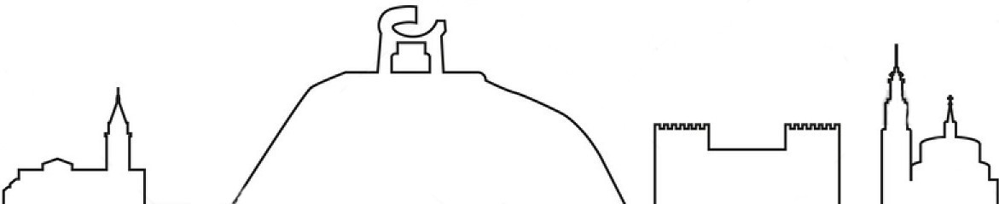
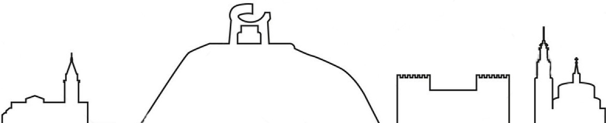

Gijón (en asturiano Xixón) es una ciudad española con la categoría histórica de villa. Es el único
núcleo de población de la parroquia del mismo nombre. Su concejo —denominación que reciben los
municipios en
el Principado de Asturias es el más poblado de la comunidad autónoma, con 267 706 habitantes en 2022.
Geográficamente, la ciudad y su término municipal se localizan junto a una bahía en la zona central de
Asturias, a 28 km de Oviedo y 26 km de Avilés. Allí forman parte de una gran área metropolitana que
abarca
veinte concejos de la región. Esta área, vertebrada por una densa red de carreteras y ferrocarriles,
contaba
con una población de 835 053 habitantes en 2011, los cuales la convierten en la séptima de España. En la
península ibérica, la villa y el concejo se sitúan en la parte central de la cornisa cantábrica y, a
escala
europea, en la zona sur del Arco Atlántico.
Desde su fundación en época romana, el desarrollo del núcleo urbano ha estado vinculado al de su puerto,
que
actualmente es líder en movimientos de graneles sólidos en España. Hasta fechas recientes, Gijón tuvo un
carácter eminentemente industrial, lo que favoreció su gran crecimiento de los siglos xix y xx. No
obstante,
durante las últimas décadas, la crisis de la siderurgia y el sector naval han llevado a la reconversión
de
su tejido productivo, transformando la ciudad en un centro turístico, universitario, comercial y de
I+D+i.
Así, además de contar con una red municipal de museos, alberga la Milla del Conocimiento Margarita
Salas.
Esta comprende el complejo cultural de la Universidad Laboral, un campus universitario y un parque
científico y tecnológico.
La ciudad es conocida por antonomasia como «capital de la Costa Verde» y es asimismo capital de la
provincia
marítima de Gijón. Por el concejo discurre el Camino de Santiago en su ruta costera y en él tienen su
sede
el Consejo Consultivo del Principado de Asturias, la Radiotelevisión del Principado de Asturias y el
Centro
de Seguridad Marítima Integral de Salvamento Marítimo.
TOPONOMIA
El origen del nombre de Gijón suscita desde hace tiempo un intenso debate entre los estudiosos. En fecha
tan temprana como 1899, Miguel de Unamuno emitió ya su opinión, según la cual la palabra provendría del latín
saxum «peñasco», lo cual tendría relación con las características geográficas del emplazamiento de la ciudad,
cuyo núcleo primitivo se asentó en el gran promontorio que hoy se denomina Cerro de Santa Catalina y en el que
se ubica el casco histórico de Cimadevilla. Otras interpretaciones de la época buscan el origen del término en
voces celtas como:
gy: agua + om: rodeada
hiton: gran hito u obra maestra
egi+gon: sitio estrecho y recogido, alto y bueno
Basándose en el primitivo carácter de Gijón como asentamiento militar, Sánchez propone la palabra sessio, que
aparece en expresiones como sessio legionis o in sessione legionum, teoría que reforzaría la presencia de unas
«aras sestianas» o «aras sessianas» que algunos autores sitúan en la Campa Torres y Sánchez interpreta como
«aras de la sessio» o «aras sessianas», es decir, «aras gijonesas». Otras explicaciones han buscado el origen
del término en antropónimos como gegionus, gegion, segius (según Manzanares); sassonius (según Schulze) o
hipotéticos *iaionus, *ieionus (según García Arias). Por otra parte, según sostiene el filólogo Xosé Lluis
García Arias, la enormemente popular identificación de Gijón con la Gigia, citada por Ptolomeo, en realidad no
tendría nada que ver con la urbe asturiana sino que correspondería a una población situada en lo que hoy es
territorio leonés, quizá próxima al río Cea. También cabe suponer que puesto que la ciudad fue fundada por la
Legio VII Gemina deba de ahí su nombre
El Estatuto de Autonomía del Principado de Asturias prevé la protección, uso y promoción de la lengua asturiana
en la comunidad autónoma. La Ley 1/1998, de 23 de marzo, de uso y promoción del bable/asturiano desarrolló la
anterior norma y dispuso que los topónimos de la región tendrían la denominación oficial en su forma
tradicional. Posteriormente, y siguiendo los pasos descritos por el Decreto 98/2002, de 18 de julio, por el
que se establece el procedimiento de recuperación y fijación de la toponimia asturiana, el Gobierno de la
comunidad autónoma oficializó los nombres vernáculos de todos los núcleos de población del concejo de Gijón.
Así, por ejemplo, el topónimo de la capital municipal pasó a ser bilingüe: «Gijón/Xixón». No obstante, el
Decreto 98/2002 indica que para la alteración de la denominación de los concejos deberá tramitarse un expediente
conforme a lo dispuesto en la Ley 7/1985, de 2 de abril, reguladora de las Bases del Régimen Local. Según
esta última norma, los cambios de denominación de los municipios españoles solo tendrán carácter oficial cuando
se publiquen en el Boletín Oficial del Estado. Dado que esto aún no ha sucedido para Gijón, a día de hoy el
nombre castellano es el único oficial para el concejo.
El escudo de Gijón, de cuyo uso se tiene constancia desde 1649, representa a Don Pelayo, primer rey de Asturias,
sosteniendo una espada en su mano derecha y la Cruz de la Victoria prolongada con un báculo en la mano
izquierda. La leyenda vincula a Don Pelayo con Munuza, quien fuera gobernador musulmán de Gijón y con quien
entró en lucha ofendido por el matrimonio no consentido entre el gobernador y la hermana de este.18 Preside el
conjunto la corona real española.17
La bandera de Gijón es rectangular, de un largo igual a tres medios su ancho, blanca, tiene un ribete rojo en
sus cuatro lados de un ancho equivalente a un sexto de su largo y lleva el escudo municipal en el centro en
versión polícroma.19 Tiene su origen en la matrícula asignada a la provincia marítima de Gijón por el Gobierno
de España ―Real Decreto de 30 de julio de 1845―.20
Gijón está situado en el centro de la costa cantábrica del Principado de Asturias, España, en el suroeste de
Europa, al norte de la península ibérica, sobre una rasa litoral en las estribaciones de la cordillera
Cantábrica. Forma parte de la vertiente hidrográfica cantábrica y se sitúa en su punto más alto (Pico Cima) a
737 m s. n. m.. El punto más alto de la zona urbana (Ceares) se sitúa a 59 m s. n. m.. El término municipal de
Gijón tiene una superficie de 182,1 km²21 y una forma vagamente rectangular. La ciudad, que ocupa una
superficie aproximada de 13,9 km², está situada en el tramo costero central del concejo, en una bahía dividida
por el Cerro de Santa Catalina (Cimadevilla) que separa la playa de San Lorenzo al este, del Puerto Deportivo,
playas de Poniente y Arbeyal, astilleros y puerto de El Musel, al oeste.
El término municipal de Gijón limita con los siguientes concejos: Carreño al noroeste, Corvera al oeste, Llanera
al suroeste, Siero al sur y Villaviciosa al este. Con Sariego sus límites llegan a unirse en un pequeño punto
correspondiente a la Peña de los Cuatro Jueces, así llamada por constituir la confluencia de los concejos de
Gijón, Villaviciosa, Sariego y Siero.
Gijón forma parte de la vertiente hidrográfica cantábrica. Los ríos más destacables del concejo son el río Aboño
y el río Piles. El río Aboño es el de mayor tamaño y caudal. Nace en el Alto de la Miranda (Llanera) y desemboca
en el límite entre el concejo de Gijón y el de Carreño formando así la ría de Aboño, fuertemente industrializada
en las últimas décadas. Este río se encuentra embalsado a la altura de San Andrés de los Tacones, al oeste del
concejo al lado de la autopista A-66, y sirve de abastecimiento de la empresa ArcelorMittal. El principal
afluente del Aboño es el río Pinzales, de similar importancia hidrológica. El Pinzales nace en el concejo de
Siero y atraviesa el concejo de Gijón de sur a norte. El río Piles, de gran importancia por atravesar parte del
casco urbano de la ciudad, es un río corto y de caudal escaso cuyos 10 o 15 kilómetros transcurren íntegramente
dentro de los límites del municipio, atravesando la parte este de la ciudad hasta desembocar en la playa de San
Lorenzo. Existen otros arroyos menores (Peña Francia, Santurio, San Miguel, Tremañes, Cutis, Pilón, etc), de los
cuales el más importante es el de La Ñora, que forma un tramo de la frontera con el concejo de Villaviciosa y
desemboca en la playa del mismo nombre.
El clima de Gijón, determinado por la presencia del mar y la baja altitud del concejo, es un clima oceánico, con
abundantes precipitaciones desde el otoño hasta los primeros días de la primavera, y un tiempo más estable y
cálido en verano. Según los datos ofrecidos por la Agencia Estatal de Meteorología para la estación
meteorológica de Gijón (período 1971-2000), la media del mes más frío (enero) fue de 8,9 °C, la media del mes
más cálido (agosto) fue de 19,7 °C y la temperatura media anual es de 13,8 °C (media anual de máximas: 17,6 °C;
media anual de mínimas: 9 °C).22 La nieve cubre ocasionalmente en el invierno los montes del concejo que rodean
la ciudad y llega de forma esporádica al centro de la ciudad, con una media de un día de nieve anual.
La precipitación media anual es de 920 l/m². Ello se debe al denominado efecto de ladera, según el cual las
lluvias más intensas se localizan en las zonas más altas y las mínimas en zonas costeras del centro y el
occidente. Coincidiendo con la época de menos lluvias se dan situaciones de aridez y sequía (el 11 % de los
meses hay aridez y el 9 % el déficit hídrico es grave).
Los vientos son esporádicos y estacionales. En invierno soplan preferentemente del sureste, templados y cálidos,
a causa de la retirada hacia el sur del anticiclón de las Azores, con lo que las borrascas atlánticas siguen una
trayectoria más meridional. En verano la situación se invierte, predominando vientos del nordeste, fríos y
secos.
Los más antiguos testimonios de presencia humana en lo que hoy conocemos como concejo de Gijón datan del
Mesolítico y consisten en instrumentos de piedra llamados «picos asturienses», hallados en la desembocadura del
río Piles y en Tremañes. Estas herramientas permitían arrancar de las rocas moluscos como las lapas, los cuales
formaban parte de la dieta de los primeros habitantes de la zona.25
Más adelante, en el Neolítico, se construyeron en el Monte Deva una serie de túmulos (primitivos enterramientos)
y en el Monte Areo un conjunto dolménico considerado como uno de los más importantes de la costa Cantábrica.26
En 1990, unas prospecciones arqueológicas permitieron sacar a la luz 30 dólmenes, repartidos en dos sectores
diferentes: Los Llanos y Les Huelgues de San Pablo, que según algunos expertos están agrupados en un «cierto
orden monumental». Sucesivas campañas arqueológicas han permitido el estudio de un túmulo en el área de San
Pablo y otros dos en la zona de Los Llanos. De tipología diferenciada, dos de ellos presentan cámaras de planta
rectangular y otro, trapezoidal con un pequeño corredor precediéndolo. Este último es un caso interesante, ya
que no es frecuente encontrar dólmenes de corredor en el área del Cantábrico. Este conjunto dolménico está
datado en el 5000 a. C. Estos monumentos megalíticos indicarían que en el actual concejo gijonés existía una
importante población fija, que tenía como objetivo la demarcación del territorio que cada uno consideraba
propio.27
No se tienen noticias de asentamientos permanentes en el concejo hasta la aparición de los castros. El más conocido
de estos poblados fortificados es el situado en la Campa Torres (Noega), con su origen en los siglos vi y v a. C.,
poblado por astures de la gens de los cilúrnigos y posteriormente romanizado al tratarse de un perfecto candidato
para acoger temporalmente efectivos militares tras la conquista.28 En cambio, algunos autores opinan que debió
existir algún tipo de población de carácter autóctono en el lugar que ocupa actualmente la ciudad, aunque no existen
datos fidedignos que apoyen estas suposiciones.29
El castro de Noega fue progresivamente abandonado como consecuencia de la fundación en el siglo i d. C. de un nuevo
asentamiento romano a los pies del Cerro de Santa Catalina, en el actual barrio de Cimadevilla. Este se convirtió en
un importante puerto estratégico en la ruta marítima del Cantábrico30 y un centro regional o caput ciutatis que
alcanzó su esplendor en el Bajo Imperio.25 Las investigaciones arqueológicas realizadas en el casco urbano a partir
de la década de 1980 han descubierto y documentado los restos de termas (siglo i a ii d. C.), murallas (siglo iii a
iv), viviendas, aljibes y una fábrica de salazones, entre otros hallazgos. Entre los vestigios de ocupación romana
encontrados en el concejo destaca una gran villa del siglo iv en Veranes que conserva la parte residencial o pars
urbana y la de servicios o pars rustica.31
Tras la romanización hubo una época muy oscura, la cual transcurrió desde el fin del control romano hasta la
llegada de los musulmanes. De hecho, el paso a la época medieval estuvo marcado por la pérdida progresiva de las
funciones urbanas provocado por el colapso de la civilización romana.25 Las construcciones romanas son
reaprovechadas para nuevas funciones. Así, se ha documentado el uso del complejo termal como lugar de habitación
y de espacio funerario asociado a la iglesia de San Pedro, y en la zona rural del concejo la villa de Veranes
fue reconvertida en iglesia y cementerio y la de Beloño en fortificación.33
Gijón fue capital de los dominios transcantábricos musulmanes bajo mando del bereber Munuza, quien fijó aquí su
residencia y puso destacamentos de tropas. También situó asentamientos militares en algún otro punto clave, pues
un alto número de tropas habían cruzado el estrecho. El resto de la región, en cambio, gozó de mayor autonomía.
La dominación duró aproximadamente desde el año 713 hasta el 718 o 722. En este último año se produjo la
victoria de los dirigentes asturianos en la batalla de Covadonga, iniciada en el 718 y liderada por Pelayo,
quien se convertirá en rey del reino de Asturias.
En el año 1147 un gran grupo de guerreros cruzados hicieron una parada en el puerto de Gijón. Habían salido de
Dartmouth con el objetivo de conquistar Tierra Santa y fueron sorprendidos por un temporal en el mar Cantábrico.
En un documento en el que cuentan estos hechos llaman a la ciudad Mala Rupis, que en latín significa «peña
mala», tal vez por su aspecto poco accesible.34
A principios del siglo xiii la crónica de Rodrigo Jiménez de Rada habla de Gijón como ciuitas deserta.25 Y a
pesar de que en 1270 Alfonso X le concedió fuero y Carta Puebla,35 se trataba de un núcleo irrelevante tanto
demográfica como económicamente.
El siglo xiv, época en la que el poder de la nobleza alcanza su máximo, estuvo marcado por una lucha dinástica
tras la muerte de Alfonso XI. Se trata de una guerra entre Pedro I el Cruel, descendiente legítimo, y el
bastardo Enrique de Trastámara. En los años siguientes Gijón fue centro de luchas entre el conde Alfonso
Enríquez y Enrique III, en las que fue cercada, incendiada y arrasada durante un duro sitio en 1394, para
terminar desapareciendo como centro urbano. Otras fuentes,29 sin embargo, opinan que se produjo un
estancamiento y regresión en el crecimiento del núcleo urbano sin llegar nunca al abandono. Como consecuencia,
durante este periodo la zona rural del concejo adquirió bastante importancia, localizándose la población
diseminada por el campo al amparo de iglesias y monasterios construidos en estilo románico, y levantándose
asimismo algunas fortalezas.3637 Un ejemplo notable de estas últimas construcciones es el desaparecido
castillo de Curiel, que servía para controlar el paso desde el centro de la región a la villa gijonesa. Aún hoy
se conservan vestigios de esta época, destacando la torre de la familia Valdés —conocida popularmente como el
Turruxón de Trubia— y las iglesias de San Miguel de Dueñas en Bernueces y de San Juan Bautista en Cenero.
No fue hasta los siglos xv y xvi cuando Gijón empezó a desarrollarse de nuevo. Esto es debido a las mejoras
realizadas en su puerto, donde se construyó una dársena que incrementó el tráfico de pesca y el comercio de
subsistencia.
A principios del siglo xix la localidad se dividía en los barrios de Cima de Villa y Bajo de Villa.40 En el
nuevo espacio urbano podían distinguirse tres partes: el arrabal de La Rueda o barrio del Carmen —al pie de la
dársena—, el Humedal —en el límite suroccidental, construido sobre unas marismas desecadas— y el ensanche
jovellanista. Este conjunto quedó rodeado en 1836 por una cerca militar construida con motivo de la primera
guerra carlista.25
En la segunda mitad del siglo Gijón experimentó un gran desarrollo debido fundamentalmente a la
industrialización. De hecho, el crecimiento demográfico fue tal que la villa pasó de 10 000 habitantes en 1857 a
27 000 habitantes en 1900.41 Un antecedente de este proceso fue la instalación en 1836 de la fábrica de
cigarros en el antiguo convento de las Agustinas en Cimadevilla.41 El proceso de crecimiento se aceleró en los
años siguientes por diversos factores, como la explotación del carbón en las Cuencas Mineras y la construcción
de nuevas infraestructuras. Destacan la carretera a León y la Carretera Carbonera a Langreo. Esta última,
inaugurada en 1842, fue la primera carretera de peaje de España. Los elevados costes que generaba motivaron la
búsqueda de otros medios de transporte para el carbón. Como resultado, en 1852 se inauguró el Ferrocarril de
Langreo, el primero en circular por Asturias.42
Todo esto hizo de Gijón una villa industrial en la cual la burguesía desempeñó un papel muy importante en el
desarrollo urbano, creándose nuevas calles y plazas bien a través de reformas interiores en el casco histórico,
bien a través de planes de ensanche para promover la expansión de la ciudad.41 El proyecto de ensanche sobre el
arenal de San Lorenzo se aprobó en 1867 y fue proyectado en terrenos en propiedad del primer marqués de Casa
Valdés, al este de la villa. La trama ortogonal entonces creada, que comienza en la plaza de San Miguel y
termina en la Avenida de Castilla, dio origen al actual barrio de La Arena.
Este nuevo desarrollo vino acompañado de más infraestructuras como la traída de aguas, el alumbrado a gas y
luego eléctrico, etc. En 1874 se abrió el tramo de ferrocarril entre Pola de Lena y Gijón, parte de la línea a
León finalizada en 1884.48 En 1890 se inauguró el primer tranvía, que conectaba la calle Corrida con Somió.49
Además, el crecimiento poblacional y económico provocó que el puerto se quedase pequeño. Las sucesivas
ampliaciones con varios diques y dársenas no impidieron que se viese desbordado por la intensidad del
tráfico.50 Como consecuencia, a las ya mencionadas infraestructuras se sumó la construcción de El Musel, que
sería el primer puerto carbonero de la península. Las obras se iniciaron en 1893 y finalizaron en 1907.51
De entre todas ellas destaca la de la calle Capua, actualmente convertida en museo.52 Con el cambio de siglo
también aparecieron las primeras parcelaciones por iniciativa particular. Consistían en un trazado de calles
sobre fincas rústicas comunicadas con el casco urbano mediante una vía de acceso. Estas formaban una corona
alrededor de la ciudad histórica, el ensanche y las zonas industriales de El Natahoyo y La Calzada. El suelo del
ensanche de San Lorenzo, demasiado caro para la demanda menos solvente, tardaría en ocuparse. Entre todas las
parcelaciones destacó la primera de ellas en el Coto de San Nicolás, situada al sur del ensanche.41
Durante la posguerra hubo en Gijón una grave situación de déficit de vivienda. Hacia la mitad del siglo
comenzaron a tener efecto diferentes propagandas dirigidas a incrementar la construcción por iniciativa tanto
pública como privada. Así, además de solucionar el problema de falta de vivienda, se intentaba fijar
trabajadores donde era necesaria fuerza de trabajo y difundir una ideología que celebraba las virtudes de la
propiedad privada y la paz social. Sin embargo, esto fue dando lugar a numerosos grupos de viviendas construidos
fuera del perímetro urbano o en suelo previsto como industrial, alterando gravemente la planificación
urbanística de la ciudad y marcando su desarrollo en las décadas siguientes.61 En 1958 surge el polígono de Las
Mil Quinientas, germen del barrio de Pumarín.62 Los barrios de El Llano y La Calzada fueron los de mayor
crecimiento, siendo muy importante la llegada de inmigrantes desde Extremadura, Andalucía y Castilla entre otras
regiones. Como resultado, en la década de 1950 y sobre todo en la de 1960 la ciudad experimentó su mayor
desarrollo, superando por primera vez en población a Oviedo.
Es también en esta época cuando se creó la Feria Internacional de Muestras de Asturias, que en 1963 se convirtió
en el escaparate de la técnica, la industria, la ingeniería, el turismo y el comercio de la región. Desde 1966
se celebra en el Recinto Ferial Luis Adaro.63
Las últimas décadas del siglo xx trajeron consigo una crisis industrial que afectó sobre todo a la siderurgia y
al sector naval al igual que al resto de la industria asturiana, especialmente la minera. A partir de la crisis
de 1973, y en especial con los objetivos del Gobierno de España para entrar en la CEE entre 1982 y 1986, la
reconversión industrial ocurrió en toda la región.64 En Gijón únicamente en 1982 se cerraron 71 empresas.65
ENSIDESA, empresa que había absorbido a UNINSA, efectuó recortes de plantilla. Más adelante, junto a Altos
Hornos de Vizcaya, se convirtió en Aceralia y a finales del siglo xx se integró en el grupo europeo Arcelor
junto a la luxemburguesa Arbed y la francesa Usinor, absorbidas en la actualidad por Mittal Steel. La industria
naval se unificó en Naval Gijón en 1985 y la industria textil prácticamente desapareció en 1990.66 En 1987 se
alcanzó el récord histórico de desempleo, que afectaba a un 26 % de la ciudad.67
En 1986 se activó un Plan General de Ordenación Urbana que saneó varias hectáreas del barrio de El Llano.68 Fue
el primero de varios planes urbanísticos que dignificaron zonas marginales como La Calzada y Tremañes o
reformularon barrios industriales como El Natahoyo. Con la ayuda de estos cambios y de la recuperación de la
economía gijonesa a la par que la española a mediados de los 1990, Gijón se reconvirtió en una ciudad orientada
al sector servicios.69 En el año 1990 se iniciaron las transformaciones que acompañaron a esta nueva etapa con
la conversión en parque público de las instalaciones militares del Cerro de Santa Catalina, en Cimadevilla. Se
inauguró allí la escultura Elogio del Horizonte, de Chillida.70 En esta década se emprendió además un ambicioso
proyecto de edificaciones públicas a partir del derribo de buena parte del Gijón industrial.71 La desaparición
de industrias portuarias dejó espacio para nuevas playas (Poniente, El Arbeyal) así como al Puerto Deportivo. El
cierre de la Fábrica de Moreda originó un barrio entero, el de Moreda, dignificado por el desvío de las vías de
ferrocarril desde la estación del Norte hasta la estación de Gijón-Jovellanos (1990).
La desindustrialización continuó en los 2000 afectando a las industrias medianas de la ciudad,72 como la mina
de La Camocha, cerrada en 2008.73 En esta época se crearon asimismo nuevos barrios como Montevil, Viesques y
Nuevo Roces.74 En la zona este de la ciudad fueron apareciendo los equipamientos que ahora conforman la Milla
del Conocimiento Margarita Salas. Estos son el campus universitario, el Parque Científico Tecnológico y la
remodelación y acondicionamiento de la Universidad Laboral bajo la marca Laboral, ciudad de la cultura.7576
 
